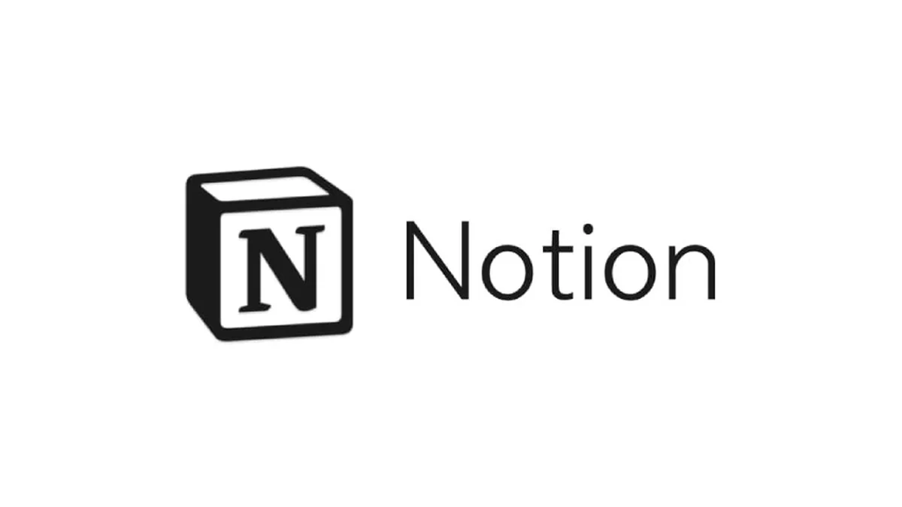

1. Notion
O Notion é uma ferramenta versátil para organizar suas tarefas, projetos e anotações. Com sua interface intuitiva, você pode criar quadros, listas e até mesmo bancos de dados personalizados.
Saiba mais sobre o Notion2. Trello
Ideal para gerenciar projetos em equipe ou individuais, o Trello utiliza quadros e cartões para manter tudo organizado. Perfeito para quem gosta de visualização clara das tarefas.
Saiba mais sobre o Trello3. Google Keep
Simples e eficiente, o Google Keep permite criar notas rápidas, listas de tarefas e lembretes. Ele sincroniza automaticamente com sua conta Google.
Saiba mais sobre o Google Keep4. Focus Booster
Baseado na técnica Pomodoro, o Focus Booster ajuda a manter o foco e gerenciar o tempo. É uma ótima escolha para quem precisa de disciplina nas tarefas diárias.
Saiba mais sobre o Focus Booster5. Todoist
O Todoist é um dos aplicativos de lista de tarefas mais populares. Ele ajuda a organizar compromissos e oferece integração com diversos outros serviços.
Saiba mais sobre o Todoist